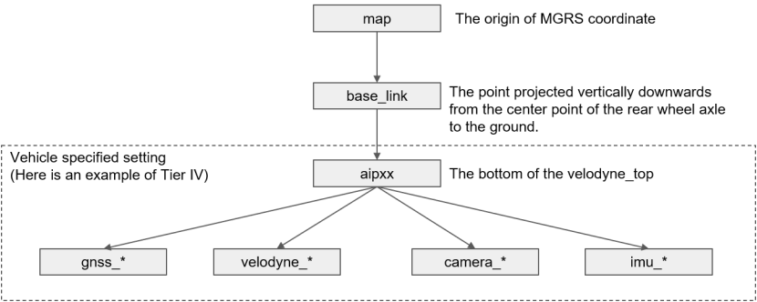

TF tree in Autoware#
Autoware uses the ROS TF library for transforming coordinates. The Autoware TF tree can be accessed from any module within Autoware, and is illustrated below.

Frames#
- earth: the origin of the ECEF coordinate system (i.e. the center of the Earth). Although this frame is not currently used by any modules (and so is not shown in the diagram above), it was added to support the use of larger maps and multiple vehicles in the future.
- map: Local ENU coordinate. This keeps the xy-plane relatively parallel to the ground surface (thus the z-axis points upwards). All map information should be provided in this frame, or provided in a frame that can be statically transformed into this frame, since most planning calculations are done in this frame.
- base_link: A frame that is rigidly attached to the vehicle. Currently, this is defined as the midpoint of the rear wheels projected to the ground.
- sensor_frame(s): One or more frames that represent the position of individual sensors. The actual name of each frame should be a combination of the name of the sensor and its position relative to the vehicle, such as
camera_front,gnss_backandlidar_top. Note that a camera should provide both camera frame and camera optical frame as suggested in REP-103 (eg: 'camera_front' and 'camera_front_optical').
Transforms#
| TF | Type | Providing Module | Description |
|---|---|---|---|
| earth->map | static | Map | Map modules will provide this TF according to an origin information parameter file. |
| map->base_link | dynamic | Localization | The Localization module calculates the vehicle's position relative to maps specified in the map frame. |
| base_link->sensor | static | Vehicle | The Vehicle module provide sensor positions relative to the base_link using URDF. There may be multiple static transforms between the base_link and a sensor frame. For example, if a camera is calibrated against a LiDAR, then the camera's TF can be expressed by base_link->lidar->camera. |
Remarks:
- A static frame does not mean it does not change. It may be remapped at times, but no interpolation will be done between the change (i.e. only the newest information is used).
- base_link->sensor is assumed to be static. In reality, this is not true due to vehicle suspension, but we assume that the displacement is small enough that it doesn't affect control of the vehicle. There is a discussion about a new nav_base frame that resolves this issue, and this new frame may be integrated at some later point.
- The specification above is not meant to restrict the addition of other frames. Developers may add any additional frames as required, but the meaning of existing frames as described above must not be changed.
Regarding REP105#
For TF, ROS follows the naming conventions and semantic meanings in REP-105. The explanation given above also follows REP-105, but with the significant change of removing the odom frame.
What is the odom frame?#
The odom frame is defined as follows in REP-105:
The coordinate frame called odom is a world-fixed frame. The pose of a mobile platform in the odom frame can drift over time, without any bounds. This drift makes the odom frame useless as a long-term global reference. However, the pose of a robot in the odom frame is guaranteed to be continuous, meaning that the pose of a mobile platform in the odom frame always evolves in a smooth way, without discrete jumps.
In a typical setup the odom frame is computed based on an odometry source, such as wheel odometry, visual odometry or an inertial measurement unit.
The odom frame is useful as an accurate, short-term local reference, but drift makes it a poor frame for long-term reference.
There have been some discussions about the purpose of the odom frame, and the main reasons for using it are as follows:
- odom->base_link is high-frequency and therefore suitable for control
- odom->base_link is continuous and keeps control from "jerks"
- odom->base_link is independent of localization, and so it is still safe to use in the event of localization failure so long as control is done in the odom frame.
Why we removed the odom frame#
Tier IV's view is that control is affected by localization, even if trajectory following is done only in the odom frame. For example, if a trajectory is calculated from the shape of the lane specified in an HD map, the localization result will be indirectly used when projecting the trajectory into the odom frame, and thus the trajectory calculation will be thrown off if localization fails. Also, any map-based calculations that are done before trajectory calculation, such as shape optimization using the map's drivable areas or velocity optimization using the predicted trajectory of other vehicles (derived from lane shape information) will also be affected by localization failure.
In order to ensure that control is unaffected by localization failure, we require that all preceding calculations do not use the map->odom transform. However, since trajectory following comes after planning in Autoware, it is almost impossible to prevent map->odom from being involved in trajectory calculations. Although this might be possible if Autoware planned like a human (who only uses route graph information from the map and can obtain geometry information from perception), it is very unlikely that an autonomous driving stack is capable of ensuring safety without using geometry information.
Therefore, regardless of the frame in which it is done, control will still be affected by localization. To control a vehicle without jerking or sudden steering in the event of localization failure, we set the following requirements for the Localization module:
- Localization results must be continuous
- Localization failures must be detected and the vehicle's pose should not be updated with any failed localization results
This new Localization architecture assumes that twist and pose will be integrated with a sequential Bayesian Filter such as EKF or a particle filter. Additionally, the new architecture is able to integrate odometry information directly from sensor data (currently IMU and vehicle speed sensors only, but GNSS and doppler sensor data may be added in future) and is able to update TF smoothly and continuously at high frequency. As a result, all of the merits of odom->base_link stated in REP-105 can be satisfied by map->base_link in this new architecture and so there is no need to set the odom frame.
To conclude, we removed the odom frame from this architecture proposal for the following reasons:
- It is almost impossible to avoid using map information in the Planning module, and thus the trajectory will have a dependency on map->odom (or map->base_link)
- Therefore, to maintain safe control even after a localization failure, the following conditions must be satisfied by the Localization module:
- It must be able to detect localization failures
- When a failure is detected, map->odom should not be updatedD:wq
- If the Localization module can satisfy the above conditions, then there is no benefit in using odom->base_link, and all modules should use map->base_link instead whenever they need a world-fixed frame.
Possible Concerns#
- The argument above focuses on replacing map->odom->base_link with map->base_link, but doesn't prove that map->base_link is better. If we set odom->base_link, wouldn't we have more frame options available?
- Once we split map->base_link into map->odom and odom->base_link, we lose velocity information and uncertainty (covariance) information between them. We can expect more robustness if we integrate all information (odometry and output of multiple localization) at once.
- We have to wait for both transforms in order to obtain the map->base_link transform. However, it is easier to estimate delay time if map->base_link is combined into one TF.
- Creating the odom frame within this new architecture should be possible, but first one has to consider if there are any components that actually need to use odom->base_link. For example, we anticipate that odom->base_link might be needed when designing a safety architecture (out-of-scope for this proposal). However, it should only be added after a comprehensive safety analysis has been completed since we already know that using the odom frame in the Control module does not ensure safety.
- Most ROS localization nodes assume odom->base_link to calculate map->odom. Wouldn't it be impossible to utilize such nodes without the odom frame?
- It is very unlikely that a single algorithm supports all use cases in all environments. We need a module that integrates output from different localization algorithms, but most third-party localization nodes are not made with consideration for integration modules. Therefore, we still need to make changes when using third-party software anyway. Technically, REP-105 is integrating the odometry and localization results by sequentially connecting TFs, but this is not realistic when we add more algorithms. We should be thinking of a way to integrate localization methods in parallel, and this new architecture was made to support such a use case.
Reference#
- REP105: https://www.ros.org/reps/rep-0105.html
- REP103: https://www.ros.org/reps/rep-0103.html
- TF discussion on ROS Discourse: https://discourse.ros.org/t/localization-architecture/8602/28
- TF discussion in Autoware.Auto (GitLab): https://gitlab.com/autowarefoundation/autoware.auto/AutowareAuto/issues/292